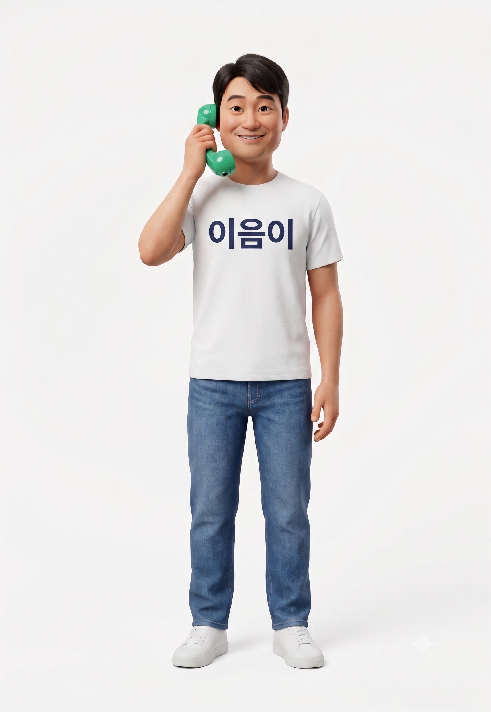
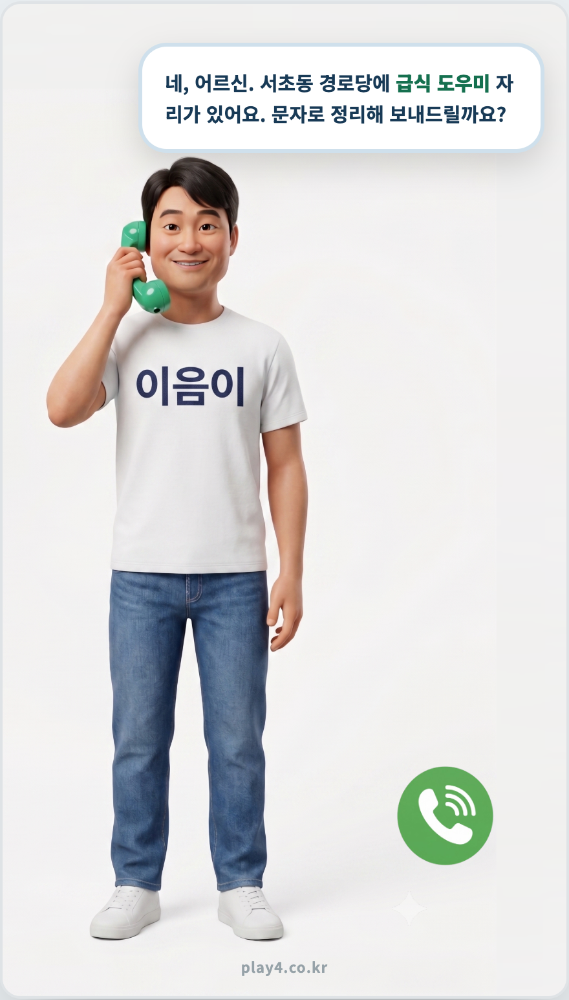
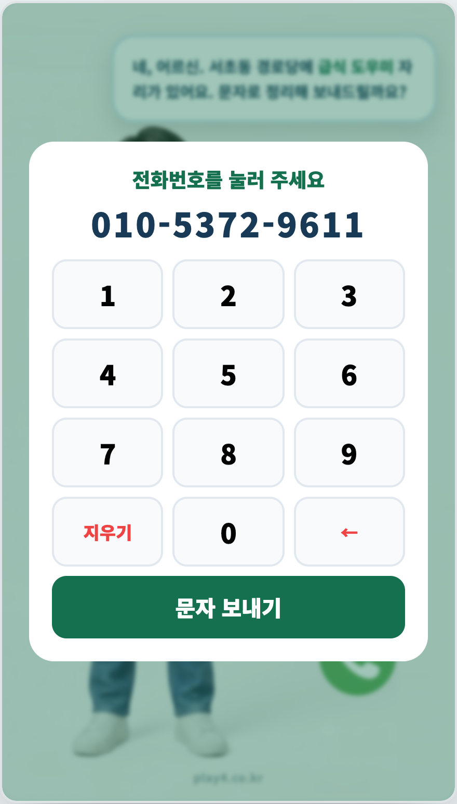
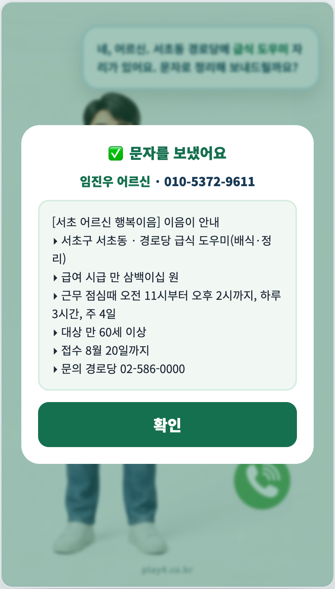

키오스크가 직원처럼
어르신을 돕습니다
복잡한 메뉴도, 어려운 버튼도 없습니다. 어르신은 그냥 말씀만 하시면 됩니다. 도우미 「이음이」가 알아듣고, 필요한 정보를 음성으로 안내하며, 원하시면 문자로 정리해 보내드립니다.
노인정 설치형 키오스크 · 실제 첫 화면
말만 걸면, 알아서 도와드립니다
음성 소통 키오스크 + 공공데이터 실시간 연동 · 작동 프로토타입 완성
(주)플레이포 · www.play4.co.kr
복잡한 메뉴도, 어려운 버튼도 없습니다. 어르신은 그냥 말씀만 하시면 됩니다. 도우미 「이음이」가 알아듣고, 필요한 정보를 음성으로 안내하며, 원하시면 문자로 정리해 보내드립니다.


노인정 설치형 키오스크 · 실제 첫 화면
둘러보기
설명보다 한 번 보시는 편이 빠릅니다. 어르신이 말만 걸면 이음이가 알아듣고, 일자리를 음성으로 안내하고, 원하시면 문자로 정리해 보내드립니다.
▶ 실제 작동 프로토타입 시연
이렇게 동작합니다
수화기를 들고 큰 초록 버튼만 누르면 대화가 시작됩니다.
어르신이 말씀하시면 알아듣고, 편안한 목소리로 안내합니다.
안내한 일자리·정보를 어르신 번호로 문자 전송. 회원이면 성함까지 자동 확인합니다.
실제 화면 구성 · 3단계로 진행됩니다

말만 걸면 이음이가
알아듣고 안내합니다

문자 받을 번호 입력
회원 성함 자동 확인

안내한 일자리를
문자로 정리해 전송
이음이는 메뉴가 아니라, 말벗 도우미
핵심 컨셉
어르신은 카테고리를 고르지 않습니다. 그냥 말씀하시면, 이음이가 알아서 연결합니다.
큰 마이크 버튼 하나. “여기를 누르고 말씀하세요.”
“요즘 일이 없어서 용돈이라도 벌었으면…” 처럼 편하게.
일자리·복지 등 어떤 도움이 필요한지 자동으로 판단해 안내합니다. 어르신은 카테고리를 몰라도 됩니다.
대화 예시
※ 「이음이」는 센터 자료를 바탕으로 안내하는 가상 도우미이며, 실제 상담·결정은 센터 직원이 함께합니다.
이용 시나리오 · 로드맵 · 기술·운영
이용 시나리오
① 다가가기
키오스크 앞에 서면 이음이가 인사합니다.
② 말하기
버튼 하나 누르고, 하고 싶은 말을 합니다.
③ 안내받기
이음이가 음성으로 알기 쉽게 안내합니다.
④ 문자 받기
“문자로 보내드릴까요?” → 번호 입력 → 발송.
서비스 로드맵
처음엔 꼭 필요한 노인 일자리 하나로. 반응을 보며 넓힙니다.
| 단계 | 무엇을 | 특징 |
|---|---|---|
| 1차 · 시범 | 노인 일자리 안내 단일 서비스 | 음성 대화 + 문자 + 2단 대시보드. 일자리는 공공 API 실시간 연동(검증 완료) + 센터 자체 공고 등록. |
| 2차 · 확장 | 건강·복지·법률·금융 등 15개 영역으로 확대 | 공공 정보 소스(API·링크) 15개 영역을 이미 정리 완료. 어르신 요청 데이터를 근거로 우선순위 추가. |
| 3차 · 심화 | 개인 모바일 연동 | 원하시는 분에 한해, 본인 폰으로 상세 안내·이력 확인. 공공 API·링크 연동도 검토. |
서비스는 하나만. 화면은 최대한 비우고, 어르신은 오직 말하고 듣는 것에만 집중하게 합니다.
처음엔 앱 설치 없이 문자로 충분합니다. 필요가 깊어지면 카카오 알림톡·전용 앱을 순차 도입합니다.
기술 · 운영 설계
노인정 소음 환경에서도 잘 알아듣도록, 하드웨어부터 신중히 설계합니다.
전화기처럼 들고 말하는 방식. 익숙하고, 주변 소음을 차단해 인식률이 크게 올라가며, 난청 어르신도 귀에 대고 크게 들을 수 있습니다.
시범은 대화면 + 외장 마이크 조합으로 유연하게. 완제품 구매 시 외장 마이크 장착이 가능한 기종을 선택합니다.
두서없는 말도 AI(Claude)가 이해·분류·응답하고, 자연스러운 음성(클로바)으로 또렷하게 안내. 어르신은 그냥 말씀만 하시면 됩니다.
① 번호 음성 복창·확인으로 오발송 방지 ② 회원명단 대조로 미등록 번호 경고 ③ 무응답 시 자동으로 처음 화면 복귀.
일자리 정보 출처
일자리 정보 출처
저희가 확인한 공식 출처입니다. 서초구 일자리는 서초 소재 기관·구청 공고가 핵심입니다.
table_view 엑셀 파일 열기 · 출처/현황 업데이트| 코드 | 출처(기관) | 종류 | 서초구 커버 현황 |
|---|---|---|---|
| A | 한국노인인력개발원 — 노인 구인정보 | 공공API | 서초 실시간 구인 현재 0건 (인근 구만) |
| B | 한국노인인력개발원 — 자립형 참여자모집 | 공공API | 서초구 51건 / 수행기관 6곳 (현재 마감·연말 재개) |
| C | 양재노인종합복지관 (서초 소재) | 웹 게시판 | 복지관 공지·채용 공고 |
| D | 서초구립 중앙노인종합복지관 (서초 소재) | 웹 게시판 | 복지관 공지·채용 공고 |
| E | 서초구청 — 노인일자리 | 웹 | 구청 노인일자리 안내 |
| 검토 | 서울시50플러스 · 서울 일자리플러스 등 | API/웹 | 서울 광역 (서초 필터 적용 예정) |
※ 출처는 지속적으로 업데이트됩니다.
플랫폼 구조 · Frontend는 심플, Backend는 체계적
플랫폼 구조
어르신은 말 한마디만 하면 됩니다. 뒤에서는 자동으로 카테고리별 정리되어, 센터의 지식·데이터·피드백이 됩니다.
설계 원리
어르신은 카테고리도, 메뉴도 모릅니다. 그냥 하고 싶은 말을 하면 됩니다. 대신 뒷단에서는 그 말이 자동으로 알맞은 카테고리로 분류·정리되어, 센터의 지식·데이터·피드백으로 차곡차곡 쌓입니다. — 어르신 앞단 복잡도 = 0.핵심 흐름 — 두서없는 말 → 정리된 데이터
어르신의 자유로운 말
→ (음성 인식) 말을 글로
→ AI 3단 정리
① 분류 어떤 주제인지 자동 판단
② 요약 핵심만 한 줄로
③ 구조화 데이터 항목으로
→ 카테고리별로 체계적으로 축적
📚 지식
어르신들이 무엇을 궁금해하고 필요로 하는지가 카테고리별로 정리됩니다.
📊 데이터
이용·관심·요청이 수치·항목으로 쌓여 현황을 한눈에 봅니다.
🔁 피드백
아직 없는 주제의 문의도 정리되어, 다음에 무엇을 더할지 근거가 됩니다.
카테고리 구조 — 지금은 일자리, 구조는 이미 넓게
| 카테고리 | 다루는 내용(예) | 상태 |
|---|---|---|
| ① 일자리·경제 | 노인 일자리, 기초연금·수당, 일자리 교육 | ✅ 지금 |
| ② 건강·의료 | 병원·건강검진 안내, 복약·만성질환, 방문건강 | 🔵 확장 |
| ③ 복지·돌봄 | 재가돌봄, 장기요양, 도시락·반찬, 안부확인 | 🔵 확장 |
| ④ 생활지원 | 주거·집수리, 교통·이동, 공과금·에너지 지원 | 🔵 확장 |
| ⑤ 여가·교육·참여 | 문화·운동 교실, 동아리, 나들이·행사 | 🔵 확장 |
| ⑥ 상담·정서 | 외로움·마음돌봄, 생활 상담 | 🔵 확장 |
| ⑦ 행정·민원 | 구청·주민센터 안내, 증명서·신청 안내 | 🔵 확장 |
| ⑧ 기타·미분류 | 분류되지 않은 모든 문의 (다음 서비스의 씨앗) | ✅ 항상 |
※ 어르신이 아직 열지 않은 카테고리의 이야기를 하셔도 막다른 길 없이 정리해 두는 구조라, 그 자체가 다음 확장의 데이터가 됩니다.
카테고리가 하나든 여덟이든, 어르신은 늘 “말 걸고 → 듣는” 똑같이 단순한 경험만 합니다. 확장은 전부 뒷단에서 일어납니다.
일자리로 시작해 실제 요청이 쌓이면, 어떤 카테고리를 다음에 열지가 데이터로 자연히 드러납니다.
어르신에겐 가장 단순한 말벗, 센터에겐 카테고리별로 쌓이는 체계